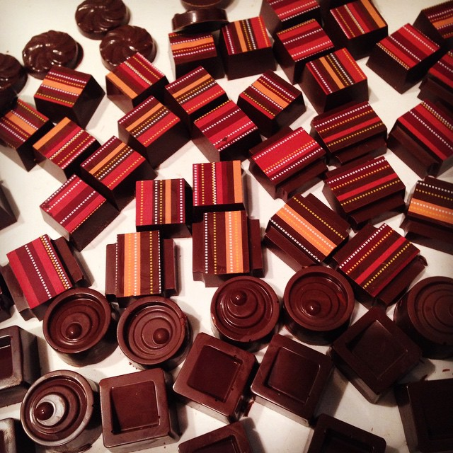
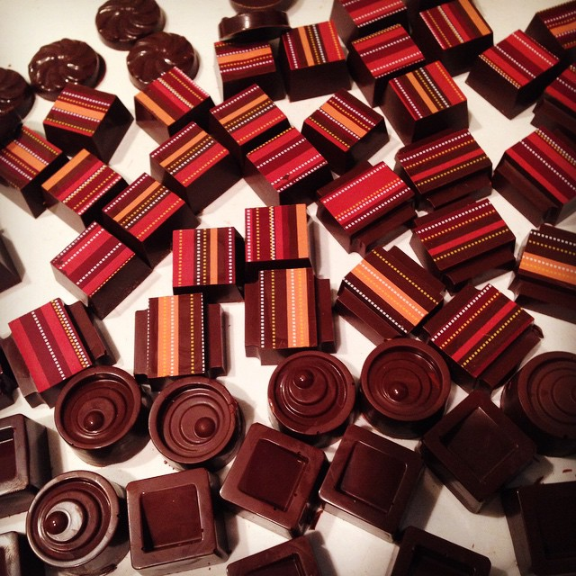

TINKER KITCHEN


 

Tinker Kitchen is a community of food hackers who love to experiment with cooking.
We’re building a maker space with all the cooking gadgets you can’t fit into your kitchen. You can play with industrial culinary hardware like sous vide circulators, commercial pasta extruders, chocolate tempering machines, and more!
Introducing Tinker Kits!

Tinker Kitchen Labs
Play with food and make new friends at the Tinker Kitchen. Make amazing things with equipment you never thought you’d get.
Learn MoreGet Our Newsletter